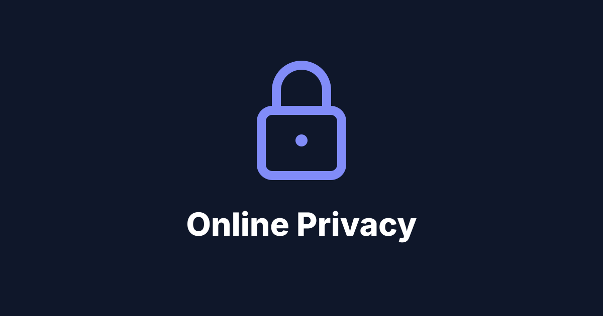

Can You Really Be Anonymous on the Internet?
Exploring digital privacy, online tracking, and the tools designed to protect us.

Every time you visit a website, search for something or scroll through social media, you leave traces behind. Your IP address, browser settings, device details and browsing habits all add up to a digital footprint.
Most of us know that websites collect data, but how much do they actually know about us? And more importantly, is it possible to browse the internet without revealing who we are?
With growing worries about surveillance, data breaches and online tracking, privacy-focused tools have become a lot more popular. From browsers like Firefox to operating systems like Linux, there are plenty of ways to take more control over your digital privacy. But can any of them make you truly anonymous?
Privacy and Anonymity: What’s the Difference?
Before looking at the tools, it helps to know that privacy and anonymity aren’t quite the same thing.
Privacy means controlling what information about you gets collected, accessed or shared. Stopping advertisers from tracking your browsing is a form of privacy protection.
Anonymity means stopping your activity from being linked to your identity at all.
You could use an encrypted messaging app that keeps your conversations private, and the service might still know your phone number. In the same way, a VPN can hide your IP address from websites without making you anonymous.
A lot of tools sold as “privacy” tools don’t give you full anonymity. Knowing which one you actually need changes which tool makes sense.
How Are We Tracked Online?
Websites have several ways of identifying and tracking visitors, sometimes without you ever logging in.
IP addresses
Every device on the internet uses an IP address. Websites can see the public IP address of your connection, which can give away your rough location and your internet service provider.
Cookies
Cookies are small bits of data that websites store in your browser. Plenty of them are needed for things like keeping you logged in, but others are used to follow you from site to site.
Browser fingerprinting
This is probably one of the more surprising ones.
Websites can collect details about your browser, screen resolution, operating system, language settings, time zone and more. Put together, those details can make a fairly unique “fingerprint” that lets a site recognise your browser even without tracking cookies.
Online accounts
Even with strong privacy tools, signing into your personal Google, Instagram or other account instantly connects what you’re doing to who you are. So tracking isn’t only about your IP address.
Firefox: Taking Back Control of Your Browser
One of the privacy tools I’ve been exploring is Mozilla Firefox.
Unlike some browsers that are closely tied to big advertising businesses, Firefox comes with a range of built-in privacy controls. One of the most useful is Enhanced Tracking Protection, which blocks a lot of known tracking tech, including some third-party tracking cookies and fingerprinting scripts.
Firefox also supports extensions like uBlock Origin, which can block ads, trackers and unwanted web requests. And because Firefox is open source, its code is public, so developers and security researchers can check how it actually works.
But Firefox isn’t an anonymity tool by itself. Websites can still see your IP address, and logging into personal accounts still gives away who you are. It cuts down some kinds of tracking without removing every way of identifying you. What it does give you is more control over your browsing.
Linux: Does Your Operating System Affect Privacy?
Browsers aren’t the only software that affects your privacy. Your operating system matters too.
I’ve also been exploring Linux, an open-source operating system that’s popular with developers, researchers and tech enthusiasts. One of its biggest advantages is transparency: a lot of its software is open source, so anyone can inspect, change and share the code.
Linux also gives you a lot of control over your apps, background services, permissions and updates. And unlike some commercial operating systems, many Linux distributions don’t ask you to sign into an account with a big tech company.
That said, using Linux doesn’t automatically make you anonymous. Your internet provider can still see parts of your network activity, websites can still see your public IP address, and your browser can still give away identifying details.
Some Linux-based systems are built specifically for privacy. One example is Tails, a portable operating system that sends your internet traffic through the Tor network and is designed to leave as few traces as possible on the computer after you shut it down.
So Linux can give you more control over your setup, but anonymity depends on a lot more than which operating system you pick.
VPNs: Hiding Your IP Address
Virtual Private Networks, or VPNs, are some of the most heavily advertised privacy tools out there.
A VPN makes an encrypted connection between your device and a VPN server. Instead of seeing your normal public IP address, websites usually see the VPN server’s address. That can protect your traffic from being watched on local networks, and hide which sites you visit from your internet provider to some extent.
But VPNs bring up something important: trust. Depending on how the service is built and run, your VPN provider may be able to see information about your connections. VPNs also don’t stop browser fingerprinting, cookies or account-based tracking on their own.
A VPN can improve your privacy, but it won’t make you invisible.
Tor: A Different Approach to Anonymity
A VPN sends your traffic through one VPN server. Tor sends it through a network of relays run by volunteers instead. Tor stands for The Onion Router, after the layers of encryption that protect your traffic as it moves through the network.
When you use Tor Browser, your connection usually passes through several relays before it reaches the website. Each relay only knows part of the route, which makes it much harder for any single observer to link you to what you’re browsing. Tor Browser also has protections that cut down tracking and fingerprinting.
It has limits, though. Browsing can be slower because your traffic hops between several relays, some websites block Tor connections, and logging into accounts that identify you can undo the anonymity. Tor also can’t promise protection against every kind of surveillance or traffic analysis.
Even so, it’s still one of the most important technologies ever built for online anonymity.
Other Tools That Can Improve Digital Privacy
Beyond browsers, operating systems and VPNs, there are other tools that can cut down how much personal information you expose online.
| Tool | What it does |
|---|---|
| Brave Browser | Blocks many ads and trackers by default |
| DuckDuckGo | Search without building the usual personalised search profile |
| Proton Mail | Privacy-focused email with encryption features |
| Signal | End-to-end encrypted messaging |
| uBlock Origin | Blocks unwanted network requests, ads and trackers |
| Bitwarden | Helps you manage passwords securely |
Each one covers a different part of privacy. Encrypted messaging protects what your messages say, and a password manager keeps your accounts safer, but neither one stops websites from identifying you. The trick is knowing what each tool actually protects.
The Biggest Weakness: Human Behaviour
Even with good privacy tools, the way we behave can give away more than we realise.
Picture someone using Tor Browser who then signs into their personal social media account. Their IP address might be hidden, but the website still knows exactly which account they’re on.
Sharing personal details publicly, using the same username on lots of sites, or opening documents that identify you can all undo your attempts at anonymity. That’s why privacy is about more than installing software. It’s also about understanding how bits of your information can be linked together across different services.
So, Can You Really Be Anonymous Online?
Not completely, at least not in every situation.
Firefox, Linux, VPNs and Tor can all make a real difference to your privacy. They cut down tracking, protect some of your communications, and make it harder for websites and other observers to work out who you are. None of them can guarantee complete anonymity everywhere, though.
A website, an advertiser, an internet provider and a well-funded surveillance organisation can all do different things. A tool that protects you from one of them might do very little against another.
Exploring Firefox and Linux has made me more curious about how much control we can have over our own digital setup. It also makes me wonder about the internet in general: how much personal information should we have to give up just to use it?
Online anonymity isn’t a switch you can flip. It comes from a mix of technology, careful choices, and knowing what information you leave behind.
Maybe the real goal isn’t to become completely invisible online. It’s to have more say over who can see our information, what they can collect, and how they can use it.